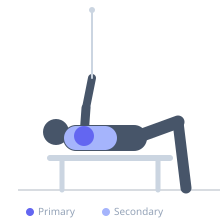
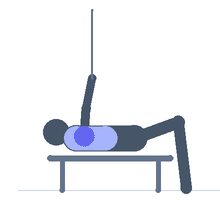

Exercise guide / Low Cable Rear Delt Flye — Crossed Cables
Low Cable Rear Delt Flye — Crossed Cables
A posterior deltoid isolation exercise using two low cable pulleys with the cables crossed — the right hand holds the left pulley's handle and the left hand holds the right pulley's handle. This crossing creates a unique starting position where the arms are crossed in front of the body, allowing a greater stretch on the rear deltoid and infraspinatus before each repetition. The cross-cable setup also changes the resistance angle compared to standard cable rear delt flyes, targeting the posterior deltoid through a different force vector.
Primary muscles
deltoid posterior
infraspinatus
Secondary muscles
trapezius middle
rhomboid major
Equipment
Cable Machine (Dual Pulley / Functional Trainer)


Starting position
- Stand between two low cable pulleys facing the cables. Reach across to grip the right handle with the left hand and the left handle with the right hand, so the cables cross at your center. Arms are crossed in front at chest height.
Setup
- Set both cable stacks to equal weight. The cables are set at the lowest position on both stacks.
Steps
- Step 1: Grip the crossed cables with arms extended in front of the body, cables crossing at center.
- Step 2: Pull both arms outward and back simultaneously in a wide arc, uncrossing the cables and moving the hands out to the sides.
- Step 3: Hold the spread position briefly, squeezing the rear deltoids and rhomboids.
- Step 4: Slowly return the arms to the crossed starting position. Repeat.
Coaching cues
- Think of trying to show the cables to the wall behind you at the top of the movement
- The rear deltoid is the primary mover — not the upper back
- The crossed starting position gives you a greater stretch — do not rush through it
Breathing
- Exhale as you pull outward. Inhale as you return to the crossed position.
Range of motion
- From cables fully crossed in front to arms out to the sides at approximately 90 degrees.
Tempo
- 2s pull outward, 1s hold, 3s slow return to crossed position.
Common mistakes
- Bending the elbows significantly — keep them mostly straight (slight soft bend) throughout
- Using upper traps and shrugging to assist the pull
- Letting the cables snap back — control the return to the crossed position
Safety
- Ensure both pulleys are set to equal weight before starting
- If shoulder impingement occurs during the outward arc, reduce range
Training
- hypertrophy: 12–20 reps
- hypertrophy: 2–4 sets
- Rest: {'hypertrophy': 60}